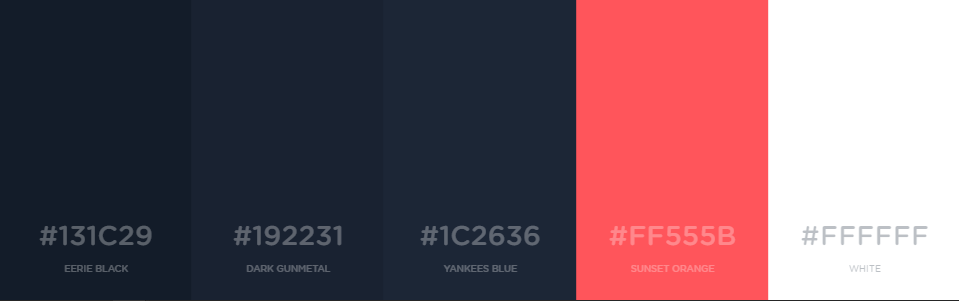
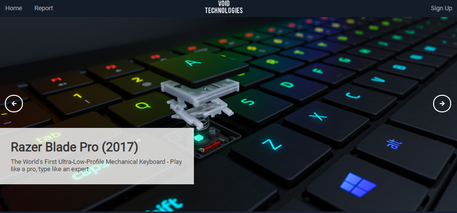

Website Report
Introduction
This website didn't make many turns in regards to design, throughout its creation.
I initially designed some wireframes, so I had a plan of how I wanted the website to look.
I then implemented the core elements of the website into html files.
Therefore, I could get a feel for the website in a real-world sense.
This allowed me to trial several colour schemes by styling the elements.
I also made sure all elements of the website are responsive through the use of media queries.
Therefore, the website will be accessible on multiple devices such as mobile phones, which
is expected to have the largest traffic for the website.
Wireframes
Below are the wireframes which I designed for the website. It includes the index page and registration page. I wanted to keep the website
fairly simple and intuitive to engage with all people. This means that the website
isn't difficult to navigate through and any user should feel comfortable with it.
On the index page, I decided on having a large slideshow at the top of the landing page to instantly draw
attention from the user. I purposely utilised highly awarded hardware for the images,
as I know this will attract my target audience of gamers, even more. I then decided upon
placing the list of products directly below to captitalize on the users existing attention.
With the registration page I still wanted to keep it simple. Therefore, I centered the form
on the page and didn't add much more, as I believe it is most effective on itself. I ensured I added
Google Captcha to act as another form of user validation. This will avoid a lot of problems
further down the line when the accounts will be registered to a database.


Colour Schemes
Below is the colour scheme which I decided to use. I utilised this as I think the dark blue colours are
really easy on the eyes and the orange allows certain aspects to pop out to the user. This
is why I used orange on the product cards. Initially, I was planning on using a basic white background.
However, I believe that using these darker colours, it makes the website look more unique
and it attracts users which are part of the 'dark mode' obsession with websites and apps. The background colour
for the entire website is the darkest to ensure elements stand out on top of it. I have used
a white colour in some parts of the website to serve as basic text.

Slideshow
I spent a lot of time perfecting the slideshow. It contains three images with captions
that change automatically every 4.5 seconds. The current slide can also be changed by pressing
the next and previous buttons. The JavaScript for the website took some time to program as
I had to implement multiple functions such as: automatic transitions, transition timer resets etc.
I believe this was extremely worth while though as the outcome to me looks amazing and is perfectly responsive
and robust for all resolutions.

References
https://www.w3schools.com - I utilised this website a fair bit throughout my development
of this website. This is because it teaches the basics of HTML, CSS, XML, XPATH and JavaScript,
all of which are required in the project.
https://fontawesome.com - I used several icons from this website such as on my slideshow.
https://fonts.google.com - This is where I got my website font from.